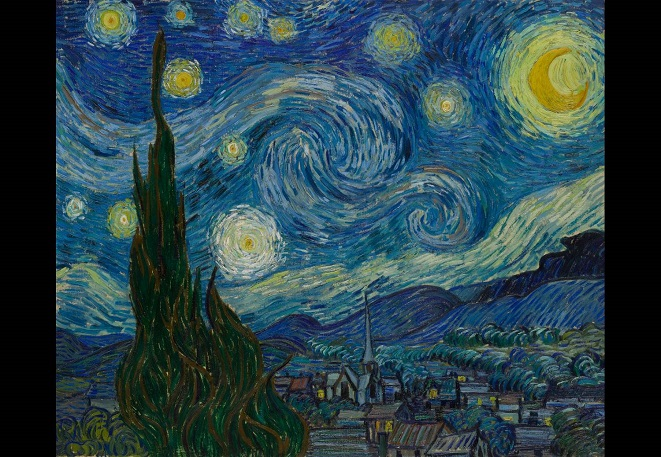
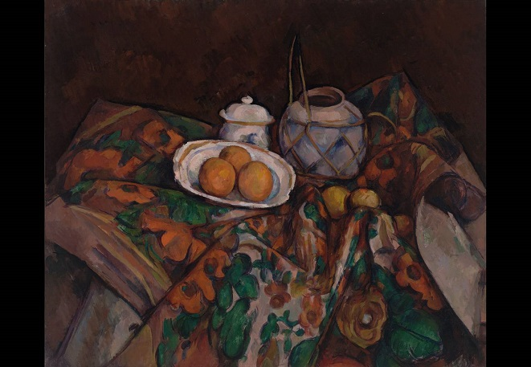
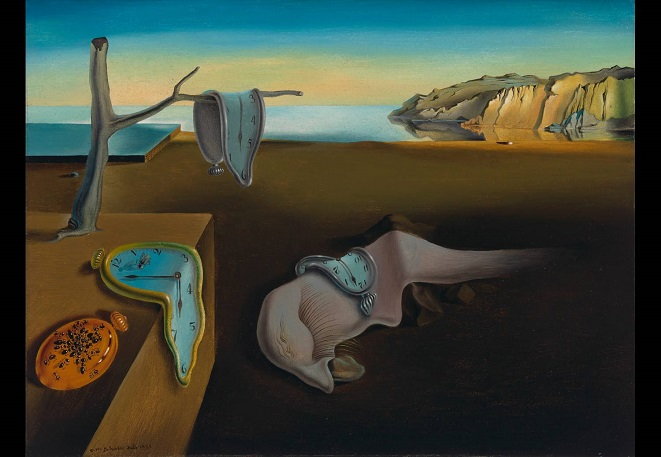
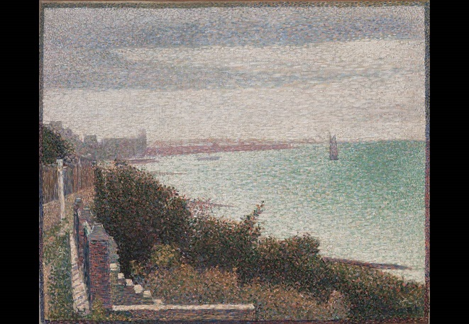

별이 빛나는 밤
반 고흐의 대표 작품으로 1889년 고흐가 남프랑스의 정신병원에서 그린 이 작품은 그의 병실 창분의 모습을 묘사한다. 짧은 붓질과 굵은 선으로 그려진 이 작품은 해 뜨기 직전의 밝고 노란 새벽별이 인상적인 작품이다.
폴 세잔의 작품으로 1902 ~ 1906년 사이에 만들어진 작품이다. 세잔은 큐비즘과 앙리 마티스 같은 후대의 화가들에게 많은 영향을 미친 화가이다. 짧은 붓터치와 다양한 색이 사용되었다. 오렌지가 담긴 그릇의 주위가 깨져 있는 것은 또 다른 시선을 보여주기도 한다.


살보도르 달리의 대표작으로 1931년 완성되었다. 리컬 사이즈 종이 한 장 크기의 작품이지만, 이 작품은 달리의 테크닉과 상상력을 보여주기에 충분하다. 스페인 출신의 초현실주의자인 그는 이 작품에서 녹아내리는 시계와 개미등을 그렸다. 그는 이 작품을 치즈가 녹는 것에서 아이디어를 얻었다고 한다.
조지스 쇠라가 1885년 완성한 작품이다. 점묘파 화법으로 만들어진 이 포스트모더니즘적 풍경화는 가까이서 볼 때와 벌리서 볼 때를 비교해 보면 그 효과가 뚜렷이 나타난다.
